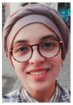

Docteure en mathématiques / Chercheuse
Docteure en mathématiques, je m’intéresse à l’application des méthodes statistiques et probabilistes à l’analyse multifractale, avec un accent sur la modélisation et l’interprétation des données complexes.
Chercheuse associée au Laboratoire d’Analyse Multifractale et Applications (LAMA, UPEC)
et au Laboratoire de Mathématiques – Modélisation Déterministe et Aléatoire (LAMMDA, ESSTHS).
Établissements: École supérieure d’ingénieurs Léonard-de-Vinci (ESILV), Paris–La Défense et EPF, Campus Paris Cachan
Établissements: École publique d'ingénieurs de la santé et du numérique (EPISEN)
Établissements: Université Paris-Est Créteil
Établissements: Université Paris-Est Créteil
Établissements: Université Paris-Est Créteil
Établissements: Université Paris-Est Créteil
Email :
wejbennasr22@gmail.com
wejdene.nasr-ben-hadj-amor@u-pec.fr
🌐 Google Scholar
🔗 ResearchGate